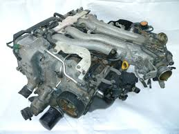
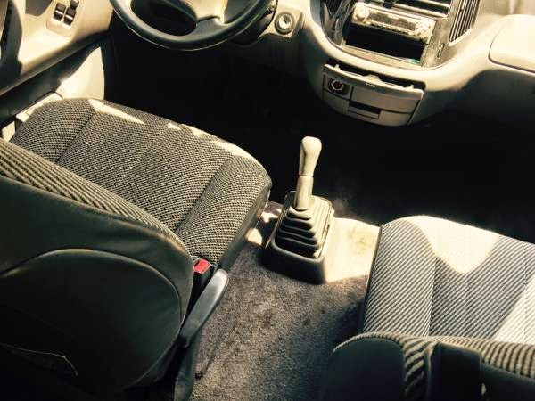
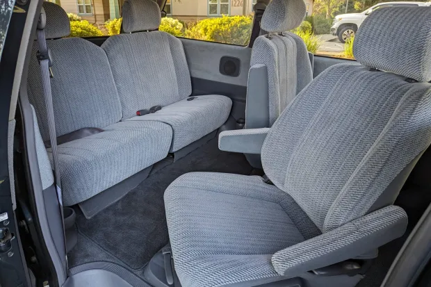

The Previa is Legendary, There is No Question About It.
Here's Why:
The Toyota Previa is a minivan that was produced by Toyota from 1990 to 1999. It is known for its unique design, which features a mid-engine layout and a distinctive rounded shape, and was only offered in rear or all-wheel drive. It was a far cry from normal at the time, when Chrysler and other brands were making more "normal" vans with front mounted engines and front wheel drive only.-

- Engine: "2TZ-FE" 2.4L Inline 4
- Naturally Aspirated Makes 138hp
- Supercharged Makes 161hp
- Transmission: 4 Speed Automatic or 5 Speed Manual
- 0-60:
- Naturally Aspirated: 12 Seconds
- Supercharged: 10 Seconds
- Drivetrains Offered:
- Rear Wheel Drive
- All Wheel Drive

Another notable feature of the Previa is its distinctive rounded shape, which was designed to provide a more aerodynamic and fuel-efficient vehicle. This also made it look like an egg. The Previa features a unique interior design, with a spacious and comfortable cabin that can seat up to seven passengers, and the rear seats fold up to the sides so you can fit whatever your heard desires in the back. The vehicle is also equipped with a variety of safety features, including anti-lock brakes, airbags, and a stability control system.
Not only is the interior so insanely spacey, it literally has SWIVELING SEATS.

The middle bucket seats can swivel 180 degrees so you can safely turn around mid road-trip and fight your siblings face to face when they insult you. This feature is very unique and is just one more reason you should buy one of these legends on wheels.